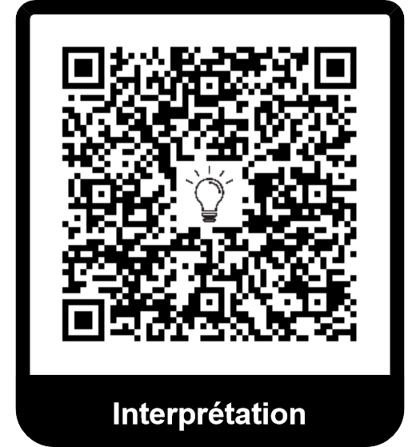

Cinématique du point
Contents
1.1.1. Cinématique du point#
1.1.1.1. Référentiel#
Important
Référentiel
Un référentiel \(\mathfrak{R}\) est un ensemble de points rigides - c’est-à-dire fixes les uns par rapports aux autres - auquel on associe une horloge. Comme le temps est absolu en mécanique classique, l’horloge est la même quelque soit le référentiel.
Important
Repère associé à un référentiel
En physique, on associe à un référentiel, un(des) repère(s) \((O, \overrightarrow{e_x}, \overrightarrow{e_y}, \overrightarrow{e_z})\) soit la donnée d’un point (O) dans le référentiel (c’est-à-dire par rapport aux points rigides définit précédemment) et une base de 3 vecteurs dans ce même référentiel.
1.1.1.2. Position et trajectoire#
1.1.1.2.1. Vecteur position: Définition#
Important
Vecteur position
On définit la position d’un point matériel M dans un référentiel \(\mathfrak{R}\) à l’aide du vecteur position \(\overrightarrow{OM}\) où O est un point fixe du référentiel.
Important
Equation horaire et trajectoire
L’évolution du mouvement du point matériel \(\overrightarrow{OM}(t)\) est appelée équation horaire. Elle est aussi définie par les composantes du vecteur position dans la base de projection. La courbe paramètrée (ou trace) ainsi définie est appelée trajectoire.
1.1.1.2.2. Expression du vecteur position#
Important
Expressions
On peut exprimer le vecteur position dans les différents repères. Les vecteurs des bases locales sont exprimées au point M mobile:
Coordonnées cartésiennes: \(\overrightarrow{OM}(t) = x_M(t) \overrightarrow{e_x} + y_M(t) \overrightarrow{e_y} + z_M(t) \overrightarrow{e_z}\).
Coordonnées cylindrique: \(\overrightarrow{OM}(t) = \rho_M(t) \overrightarrow{e_r}(t) + z_M(t) \overrightarrow{e_z}\).
Coordonnées sphériques: \(\overrightarrow{OM}(t) = r_M(t) \overrightarrow{e_r}(t)\).
1.1.1.3. Vecteur vitesse#
1.1.1.3.1. Vecteur vitesse: Définition#
Important
Vecteur vitesse
Soit O un point fixe du référentiel R et M un point mobile. La vitesse du point M dans le référentiel R est définit comme la dérivée temporelle du vecteur position dans le référentiel R.
1.1.1.3.2. Expression du vecteur vitesse#
Important
Expressions du vecteur vitesse
Le vecteur vitesse s’exprime.
En coordonnées cartésiennes:
En coordonnées cyindriques:
En coordonnées spheriques:
Démonstration
On peut démontrer ces expressions de deux manières: soit en dérivant le vecteur position (il faut tenir compte des dérivées des vecteurs des bases locales, nous le verrons en traitant le cas du vecteur accélération) ou en utilisant l’expression du vecteur déplacement élémentaire. Nous présentons ce dernier cas. On rappelle que le déplacement élémentaire s’exprime (respectivement en coordonnées cartésiennes, cylindriques, sphériques):
(1.1)#\[\begin{equation} \overrightarrow{dOM} = dx \overrightarrow{e_x} + dy \overrightarrow{e_y} + dz \overrightarrow{e_z} \end{equation}\](1.2)#\[\begin{equation} \overrightarrow{dOM} = dr \overrightarrow{e_r} + r d \theta \overrightarrow{e_{\theta}} + dz \overrightarrow{e_z} \end{equation}\](1.3)#\[\begin{equation} \overrightarrow{dOM} = dr \overrightarrow{e_r} + r d \theta \overrightarrow{e_{\theta}} + r \sin \theta d\varphi \overrightarrow{e_{\varphi}} \end{equation}\]Ici, on rapport le déplacement élémentaire à la variation temporelle dt pendant lequel le déplacement se fait, ce qui revient à rapporter chaque différentielle (\(dx, dy, d\theta, dr...\)) par dt, c’est-à-dire les remplacer par les dérivées. On obtient bien les expressions données.
1.1.1.4. Vecteur accélération#
1.1.1.4.1. Vectreur accélération: Définition#
Important
Vecteur accélération
On définit l’accélération d’un point M dans un un référentiel R comme la dérivée du vecteur vitesse dans le référentiel R.
1.1.1.5. Vecteur accélération: Expressions#
Important
Vecteur accélération en coordonnées cartésiennes.
En coordonnées cartésiennes, le vecteur accélération s’écrit:
Important
Vecteur accélération en coordonnées cylindriques.
En coordonnées cylindriques, le vecteur accélération s’écrit:
Démonstration dans le cas cylindrique
On va partir de l’expresson du vecteur vitesse et le dériver.
\[\begin{align*} \overrightarrow{v_{M/R}}& = \frac{\rm{d\overrightarrow{v_{M/R}}}}{\rm{dt}}\\ & = \frac{\rm{d}}{\rm{dt}}\left(\dot r\overrightarrow{e_r} + r \dot \theta \overrightarrow{e_{\theta}} + \dot z \overrightarrow{e_z}\right)\\ & = \ddot r \overrightarrow{e_r} + \dot r \underbrace{\frac{\rm{d}\overrightarrow{e_r}}{\rm{dt}}_{\mathfrak{R}}}_{= \dot \theta \overrightarrow{e_{\theta}}} + \left(\dot r \dot \theta + r \ddot \Theta\right)\overrightarrow{e_{\theta}} + r \dot \theta \underbrace{\frac{\rm{d}\overrightarrow{e_{\theta}}}{\rm{dt}}_{\mathfrak{R}}}_{= - \dot \theta \overrightarrow{e_r}} + \ddot z \overrightarrow{e_z}\\ & = (\ddot r - r \dot \theta^2) \overrightarrow{e_r} + (2 \dot r \dot \theta + r \ddot \theta) \overrightarrow{e_{\theta}} + \ddot z \overrightarrow{e_z} \end{align*}\]
1.1.1.6. Relation géométrique entre vitesse et accélération#
Important
Mouvement uniforme, accélérié et décéléré
Un mouvement est dit uniforme si la norme de la vitesse est constante au cours du mouvement.
Si la norme diminue, on dit que le mouvement est décéléré. Si la norme augmente, il est accéléré.
Important
Relation vitesse et accélération
Dans un mouvement uniforme, le vecteur accélération est soit nul, soit perpendiculaire au vecteur vitesse.
Dans un mouvement accéléré, le vecteur accélération forme avec le vecteur vitesse un angle en valeur absolue inféreure à \(\pi / 2\)
Dans un mouvement décéléré, le vecteur accélération forme avec le vecteur vitesse un angle en valeur absolue supérieure à \(\pi / 2\)
Démonstration
Soit \(\theta = (\overrightarrow{v};\overrightarrow{a})\). Remarquons que:
\[\begin{align*} \overrightarrow{v} \cdot \overrightarrow{a} &= \overrightarrow{v} \cdot \frac{d\overrightarrow{v}}{dt}\\ \left \| v \right \| \left \| a \right \| \cos \theta &= \frac{d}{dt}(\frac{1}{2} v^2) \end{align*}\]La vitesse est donc constante si: \(\left \| v \right \| \left \| a \right \| cos \theta = 0\) soit si \(\left \| a\right \|=0\) ou si \(\theta = \pm \pi/2\).
Sinon, \(\textrm{sign}(\frac{dv}{dt}) = \textrm{sign}(\theta)\) donc la vitesse est décroissante si \(|\theta| > \pi/2\) et croissante si \(|\theta| < \pi/2\).
1.1.1.7. Vecteur accélération: Base de Frenet#
Important
Base de Frenet
La base de Frenet est une base locale définie pour une trajectoire plane. Elle est définit par deux vecteurs unitaires:
Un vecteur tangeant à la trajectoire \(\overrightarrow{u_T} \) et dirigé dans le sens du mouvement
Un vecteur normale à la trajectoire \(\overrightarrow{u_N} \) et dirigé de manière à ce que l’angle \((\overrightarrow{u_T}, \overrightarrow{u_N}) = + \frac{\pi}{2} \).
Important
Composantes de l’accélération.
Pour un mouvement plan, on peut décomposer l’accélération en deux composantes:
l’accélération tangentielle \(\overrightarrow{a_T} \) suivant \(\overrightarrow{u_T}\) Cette composante de l’accélération est réponsable de la variation de vitesse (en norme: accélération et décélération)
l’accélération normale \(\overrightarrow{a_N} \) suivant \(\overrightarrow{u_N} \) Cette composante de l’accélération est responsable de la déviation du mobile (changement de direction et donc courbure de la trajectoire.
Une étude des composantes de l’accélération montre qu’on a les relations suivantes:
où \(R\) est appelé rayon de courbure. Il peut varier dans le temps et reflète… la courbure de la trajectoire en un point.
Visualiser |
Interpréter |
|---|---|
|  |
Interprétation
Le rayon de courbure est algébrique: son signe dépend de la concavité de la trajectoire. Dans le cadre du programme, on se contentera de sa valeur absolue dans l’expression de l’accélération normale. Il suffit alors d’orienter l’accélération normale par la physique: est est toujours vers l’intérieur de la courbure de la trajectoire.
On peut interpréter ces expressions.
plus l’accélération normale est grande, plus la trajectoire va être courbée soit un faible rayon. De plus, plus la vitesse est grande, plus il faut une forte accélération pour courber la trajectoire.
l’accélération tangentielle étant directement reliée au caractère accéléré ou décéléré, il est logique d’avoir cette relation. La démonstration de l’expression de l’accélération tangentielle se fait d’ailleurs à partir du calcul du produit scalaire \(\overrightarrow{a}\cdot\overrightarrow{v} \) comme on l’a fait précédemment.
Quelques cas particuliers pour le rayon de courbure:
Cas d’une trajectoire circulaire (cf. suite): le rayon de courbure est le rayon du cercle.
Cas d’une trajectoire rectiligne: l’accélération normale étant alors nulle, le rayon de courbue est infini.